Backpropagation & training in practice
Reader-friendly version of the 48 lecture slides: the lecture content in normal flow, with figure descriptions and data tables where the figure carries data. Open the presentation.
Slide 1

Backpropagation & training in practice
Slide 2
Last lecture: one neuron that learns
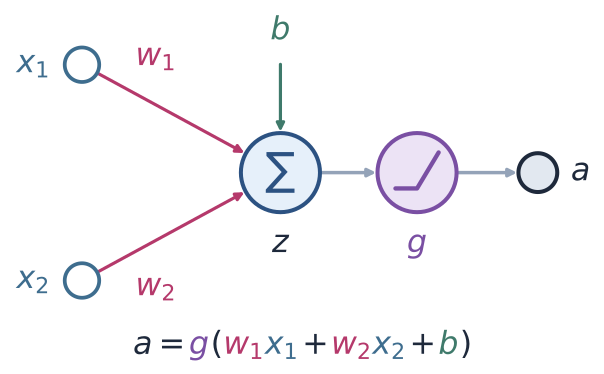
A model neuron with two inputs, x1 and x2, with weights w1 and w2, summed with a bias b into z, passed through the nonlinearity g, giving the output a = g(w1 x1 + w2 x2 + b)
Open full-size figure
- Perceptron: threshold , update only on mistakes
- Delta rule: no , squared error
- Logistic: sigmoid , cross-entropy loss
- The model neuron: a weighted sum , then a nonlinearity . Its weights set one decision boundary
- Learning the weights: compare the output with the target , the right answer. Measure the loss and step against its gradient
- Perceptron, delta rule, logistic regression: change each weight by × error × input. Only how the error is computed differs
Slide 3
Learning the weights: start anywhere, walk downhill
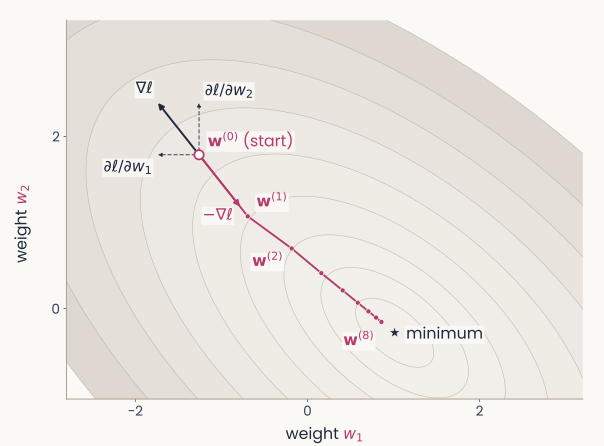
Contours of the loss over the two weights w1 and w2, with the minimum marked by a star. At the start w(0), at the upper left, a dark arrow shows the gradient pointing uphill, with dashed arrows for its two components, the partial derivatives with respect to w1 and w2. A magenta arrow labelled minus the gradient points the other way, to w(1); eight dots w(0) to w(8) step down toward the minimum
Open full-size figure
- Each pair has a loss, here the squared error averaged over a small training set; contours join equal losses
- Start at small random weights . The gradient points uphill, toward higher loss
- Each step is a weight update against the gradient; the learning rate sets its size
- For one neuron the loss is convex, a bowl with a single minimum. From any start, small enough steps reach the bottom
Slide 4
You never see the whole landscape
- The contour map was drawn by computing for every pair on a grid: easy with only 2 weights
- With 100 weights and only 10 values tried per weight, the grid has points. Real networks have millions of weights: the map can never be drawn
- Gradient descent never needs the map. At the current weights it computes the gradient: for each weight, which way to move to lower , and how strongly
- Why that is cheap: the gradient is a formula, worked out once with calculus (next slides). Evaluating it takes one pass backward through the network, about the cost of the forward pass that computes . Its cost grows in proportion to the number of weights, not exponentially as the grid does
- Each small step lowers the loss. A step computed from one example, or from a small batch of examples (minibatches, later today), lowers it on average
Slide 5
The chain rule, one link at a time
- The weights change the loss only through a chain:
- Chain rule of calculus: if and , then . A longer chain multiplies one slope per link. This gives the gradient of the loss with respect to each weight
- Link : , set by the loss
- Link : , the slope of the output function
- Link : , because
- Multiply the three slopes and you have the gradient
Slide 6
The three links, worked out: delta rule
Output (no nonlinearity), loss
- Step against it: , the delta rule
Slide 7
The three links, worked out: logistic regression
Output , loss
- The sigmoid's slope cancels the loss's denominator: the same form as the delta rule
Slide 8
The perceptron: no slope to follow
- Output : flat, then a jump. Its slope is 0 almost everywhere: the chain rule gives nothing
- Instead, its loss uses directly, with labels : the perceptron criterion . It is 0 on the correct side of the boundary and grows with how far an example is on the wrong side
- On a mistake its gradient is , otherwise 0. Stepping against it gives Rosenblatt's rule: on each mistake,
- Three rules, one recipe: pick an output and a loss, then step against the gradient
Slide 9
Why more than one layer?
Slide 10
XOR is built from simpler rules
- XOR is OR, and NOT AND:
- Each simpler rule is one perceptron, one line (below). Stack them: OR and AND in a first layer, a neuron combining their outputs in a second. What one neuron cannot compute, a stack of neurons can
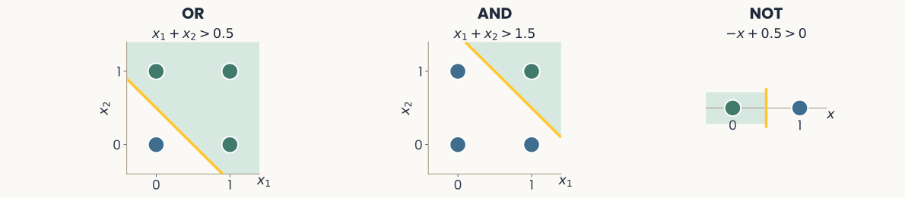
Three small panels. OR: the four inputs, with (0,1), (1,0) and (1,1) green and (0,0) blue, separated by the gold line x1 + x2 = 0.5. AND: only (1,1) green, separated by the line x1 + x2 = 1.5. NOT x1: the four inputs, green where x1 = 0 and blue where x1 = 1, separated by the vertical gold line x1 = 0.5
Open full-size figure
Slide 12
Past the XOR wall: stack neurons into layers
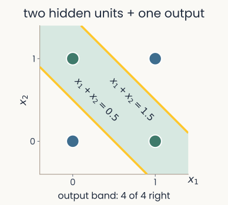
The four XOR points, blue at (0,0) and (1,1), green at (0,1) and (1,0). Two hidden units, then one output: two gold lines, x1 + x2 = 0.5 and x1 + x2 = 1.5, bound a band that is the output's green region, and all 4 points are right
Open full-size figure
- One neuron draws one line: at best 3 of the 4 XOR points
- Two hidden units draw the OR line and the AND line; the output fires between them: all 4 right
- A multilayer perceptron (MLP) stacks layers: each layer's outputs are the next layer's inputs, and every unit takes a weighted sum, then a nonlinearity. Stacked neurons draw boundaries that one line cannot
Slide 13
The hidden layer re-represents the input
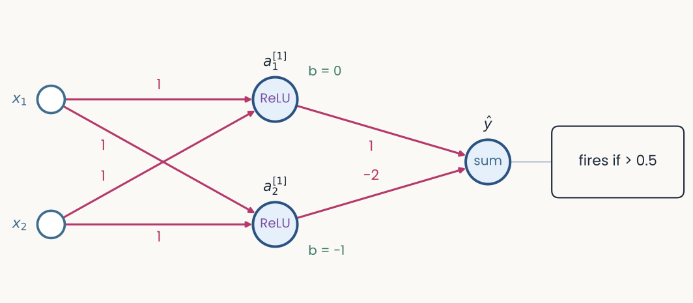
The XOR network of the previous slide: inputs x1 and x2, weights of 1 into both ReLU hidden units, biases 0 and minus 1, output weights 1 and minus 2, output is a step unit with bias minus 0.5
Open full-size figure
- : output of unit in layer . Unit 1 acts like OR, unit 2 like AND
- In the plane of , (0,1) and (1,0) land on one point: one line separates the classes
- The hidden layer turns XOR into a linearly separable problem for the readout
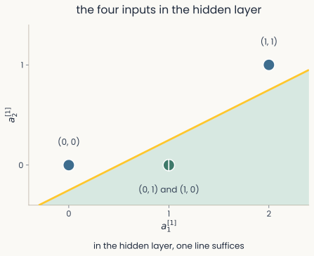
The four XOR inputs in hidden-unit coordinates a1 and a2 of layer 1: blue (0,0) at the origin, green (0,1) and (1,0) together at (1,0), blue (1,1) at (2,1). One solid gold line separates the green point, on the shaded side, from the two blue points. The caption reads: in the hidden layer, one line suffices
Open full-size figure
Slide 14
How can a hidden unit learn when nothing tells it what to output?
Slide 15
Backpropagation: a long and disputed history
- 1958: Rosenblatt's perceptron learns its weights from examples, but only one layer of them
- 1969: Minsky & Papert show that a perceptron cannot compute XOR. No widely known method trains hidden layers, and interest in neural networks fades
- 1970–1974: Linnainmaa, studying rounding errors in computer programs, computes all the derivatives of a long calculation in one backward sweep. Werbos: general models in 1974, neural networks in 1982
- 1986: Rumelhart, Hinton & Williams show that hidden units trained this way learn useful internal representations. Their Nature paper made backprop the standard method
- Who deserves the credit is still argued. Hinton's 2024 Nobel Prize in Physics, shared with Hopfield, cited a different kind of network, the Boltzmann machine, not backprop. His 2018 Turing Award, shared with Bengio and LeCun, was for deep learning as a whole
Slide 16
The credit-assignment problem
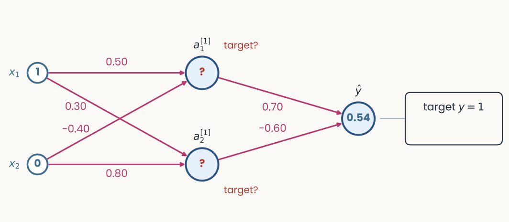
A 2-2-1 network drawn left to right. Inputs x1 = 1 and x2 = 0; six magenta weights; two hidden units marked with red question marks and the words target?; an output unit at 0.54; a box on the right reading target y = 1
Open full-size figure
- Same 2-2-1 layout, set up to be trained: ReLU hidden units, sigmoid output, cross-entropy loss. Weights start small and random; biases 0
- , the probability that XOR = 1. Target 1, loss 0.61. Which weights should change?
- A hidden unit has no target: what should have been? This is credit assignment
Slide 17
How should each weight change?
- Compare the output with its target: the error is . Negative, so raise
- The goal: change the weights a little, so that next time the output lands closer to its target
- For each weight, ask: if it grew slightly, would the loss of this example go up or down, and how fast? That slope is the gradient. Step against it:
- A weight into the output gets the output error directly. A hidden unit's error is the output error sent back along its connection, times that connection's weight (0 if the unit was off)
- The chain rule: when acts on through and then , , the product of the slopes along the way. Next slide: on this network
- Activity flows forward to the output. Error flows backward to every weight
Slide 18
The chain rule on this network
- A weight changes the loss only through what it feeds. Hidden weight (from to hidden unit 1):
- Output weight, one link:
- Hidden weight, multiply the slopes along the whole chain:
- With the worked example's numbers (next slides):
- Step 2 computes the first factor, step 3 the middle two, step 4 multiplies by the input
Slide 20
Step 1: the forward pass
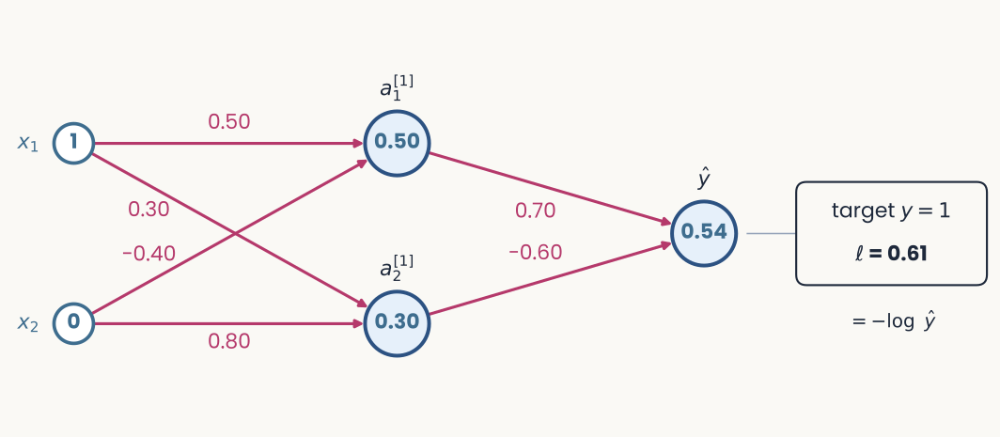
The same network after the forward pass. The box on the right now reads target y = 1, loss 0.61, and underneath, equals minus log y hat
Open full-size figure
- Run the input through, keeping every weighted sum and output
- Hidden (ReLU): , . Output (sigmoid): ,
- Its loss, the cross-entropy:
Slide 21
Step 2: the error at the output
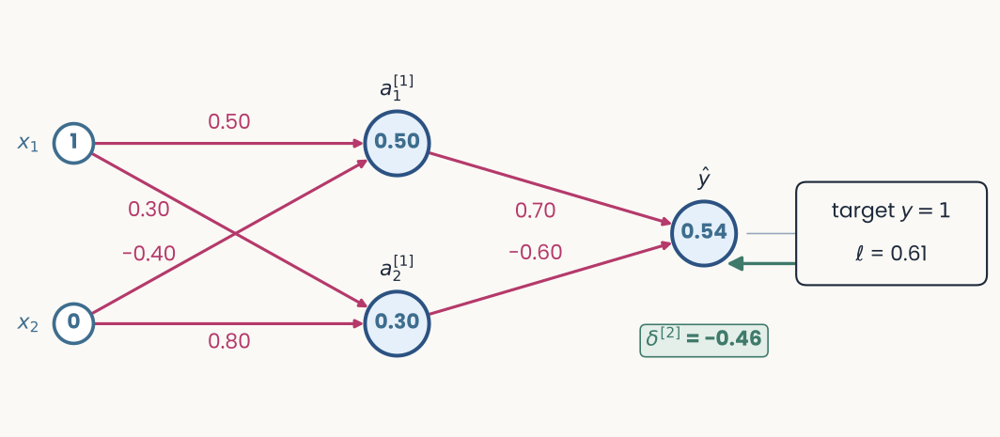
The same network. A green arrow runs back from the loss box to the output unit, and a green tag under the output reads delta = minus 0.46
Open full-size figure
- Sigmoid + cross-entropy: error = prediction − target:
- Negative: the output was too low and should rise. Every later step builds on this output error
Slide 22
Step 3: send the error backward
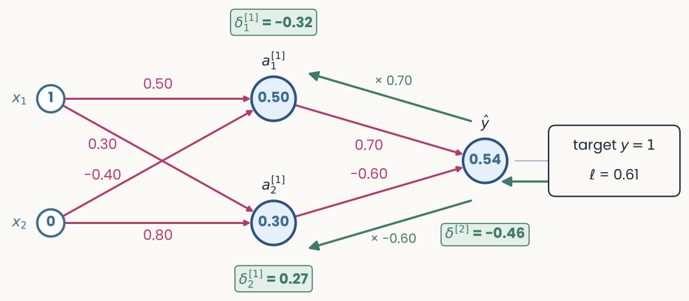
The same network. Green arrows run back from the output to each hidden unit, labelled times 0.70 and times minus 0.60. Green tags read delta 1 = minus 0.32 next to a1 of layer 1 and delta 2 = 0.27 next to a2 of layer 1
Open full-size figure
- A hidden unit's error = output error × the linking weight × its ReLU slope (1 if on, 0 if off)
- ;
- Each hidden unit gets its own error, even its own sign: should have been higher, lower
Slide 23
Step 4: every gradient is error × activity
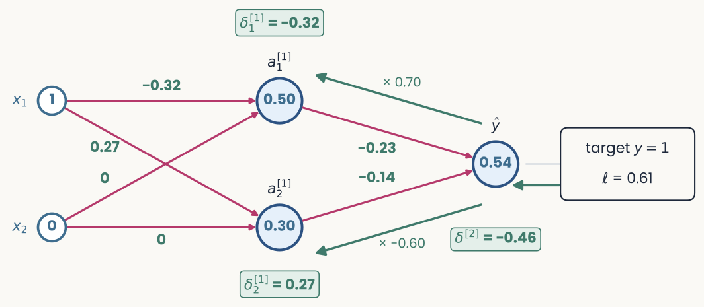
The same network with the weights replaced by their gradients in green: minus 0.32 and 0.27 on the connections from x1, 0 on both connections from x2, minus 0.23 and minus 0.14 on the connections into the output. The error tags stay in place
Open full-size figure
- gradient = error × activity:
- Weights from get 0, since . Each bias gets its unit's error: , ,
- One step with on all weights and biases: rises from 0.54 to 0.82
Slide 24
Why it works: the chain rule, run backward
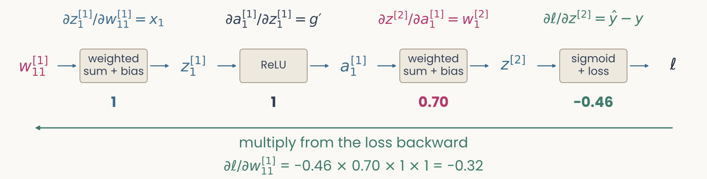
A chain of five boxes, w11 of layer 1, z1 of layer 1, a1 of layer 1, z of layer 2, and the loss ℓ, joined by arrows. Above each arrow its local derivative: x1, g prime, w1 of layer 2, and y hat minus y; below each arrow its value: 1, 1, 0.70, and minus 0.46. Underneath: d ℓ by d w11 of layer 1 equals minus 0.46 times 0.70 times 1 times 1 equals minus 0.32, multiply from the loss backward
Open full-size figure
- The loss depends on the weight (from to ) through a chain: . The chain rule multiplies the local slopes along it, as steps 2 to 4 did
- Backprop is the chain rule of multivariable calculus, applied layer by layer. You will not be asked to derive it. If you have taken multivariable calculus, the derivation is in the backpropagation notes
Slide 25
With hidden layers, the landscape is no longer a bowl
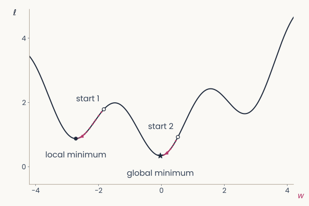
A loss curve over one weight w with three valleys of different depths. Two starting points chosen at random; gradient descent from each follows the curve downhill to a different valley: one reaches the deepest valley, marked global minimum, the other stops in a shallower valley, marked local minimum
Open full-size figure
- Once a network has hidden layers, the loss is not convex: it has many valleys, local minima
- Backpropagation gives the gradient; gradient descent goes down from wherever it starts. Different starts can end in different minima, and nothing guarantees the best one
- In practice, large networks usually reach a minimum that works well. That is an observation, not a guarantee
Slide 26
Try it: train a small network on 2-D data
- Compare one and two hidden units on XOR. Every weight is learned by the same four steps
Slide 27
From one output to one output per class
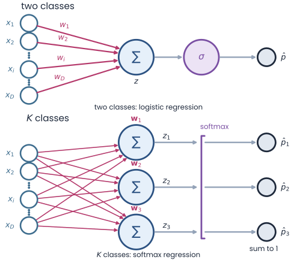
Two panels stacked. Top, two classes: inputs x1 to xD, each with its weight, summed into z, passed through a sigmoid to give one probability p-hat (logistic regression). Bottom, K classes: the same inputs feed three output neurons, each with its own weight vector w1, w2, w3, giving logits z1 to z3; a softmax turns them into three probabilities p-hat 1 to 3 that sum to 1 (softmax regression)
Open full-size figure
- The XOR network had one output; reading out the 51 objects of the IT recordings needs more. inputs; two classes: one neuron and a sigmoid, as in logistic regression
- classes: neurons reading the same inputs, each with its own weights , one weighted sum per class (the logits)
- The softmax turns the logits into probabilities that add up to 1
Slide 28
Many classes: softmax and cross-entropy
- One weighted sum per class , the logits . The softmax turns them into probabilities; the loss: −log of the true class's probability
- Example: logits give . True class 1: . True class 3:
- Right and confident, ; wrong and confident, grows without bound
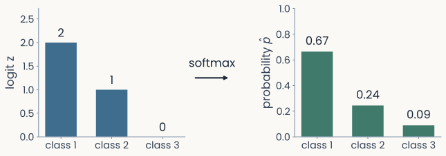
Two bar charts joined by an arrow labelled softmax. Left: logits 2, 1 and 0 for classes 1, 2 and 3. Right: probabilities 0.67, 0.24 and 0.09, which add up to 1
Open full-size figure
Slide 29
PyTorch: a neuron in a few lines
import torch
import torch.nn as nn
neuron = nn.Linear(in_features=3, out_features=1) # weight shape (out, in) = (1, 3)
x = torch.tensor([[0.5, -1.0, 2.0]]) # one example, 3 features
a = torch.relu(neuron(x)) # a = ReLU(w^T x + b)
print(neuron.weight.shape, a) # torch.Size([1, 3]) ...
nn.Linear(in, out)stores the weights as(outputs, inputs): one row per neuron
The recitation on PyTorch went through this code line by line.
Slide 30
One training step, and one epoch
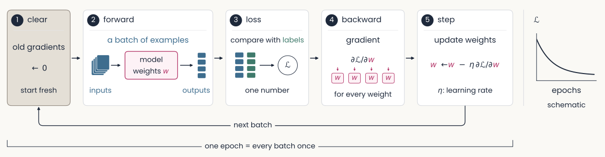
A cycle of five numbered steps. 1, clear the old gradients. 2, forward: a batch of examples goes through the model and gives outputs. 3, loss: the outputs are compared with the labels, giving one number L. 4, backward: the gradient of L for every weight. 5, step: each weight moves against its gradient, scaled by the learning rate. An arrow labelled next batch returns to step 1. One epoch is every batch of the training set once. An inset shows L falling over epochs
Open full-size figure
- One step: a batch (a set of examples processed together) forward, one number ℒ (their average loss), its gradient for every weight, then every weight moves a little
- One epoch: every example in the training set once. Training repeats epochs while ℒ falls
Slide 31
The training loop
model = nn.Linear(D, K) # D inputs, one logit for each of K classes
loss_fn = nn.CrossEntropyLoss() # softmax + cross-entropy, averaged
opt = torch.optim.SGD(model.parameters(), lr=0.1) # SGD: a plain gradient step
for epoch in range(num_epochs): # one epoch = one pass over the training set
opt.zero_grad() # 1. clear the old gradients
logits = model(X_train) # 2. forward: logits for every image
loss = loss_fn(logits, y_train) # 3. the average cross-entropy
loss.backward() # 4. gradient of the loss for every weight
opt.step() # 5. update: w <- w - lr * gradient
with torch.no_grad(): # evaluate on held-out images
acc = (model(X_test).argmax(1) == y_test).float().mean()
- This model is a linear readout. To train a hidden layer, change only the
modelline backward()computes the gradients.opt, the optimizer, turns them into weight changes instep()- This is the delta rule's loop, written for a whole layer: forward, loss, gradient, step, repeat
Slide 32
Autograd: you never write the backward pass
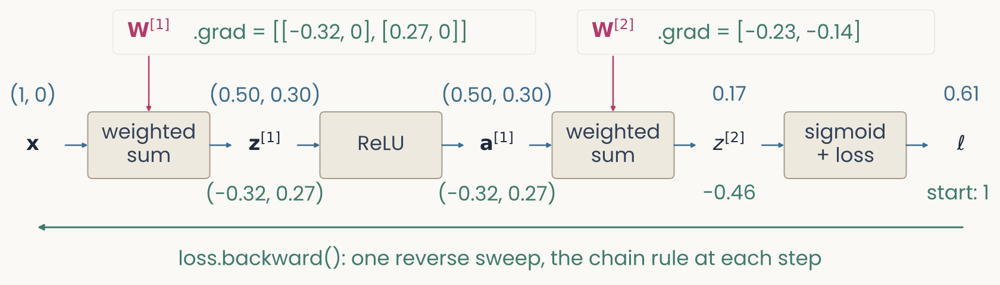
The worked example as PyTorch records it: x, a weighted sum with W1, z1, ReLU, a1, a weighted sum with W2, z2, and a sigmoid-plus-loss box giving ℓ. Forward values in blue above each quantity, gradients in green below, starting from 1 under ℓ; a long green arrow runs right to left, labelled loss.backward, one reverse sweep, the chain rule at each step. W1 and W2 carry their .grad values
Open full-size figure
- PyTorch's automatic differentiation (autograd) records the forward pass as a computational graph: the operations that ran, and the values each one used
loss.backward()sweeps the graph in reverse: output error, hidden errors, then each parameter's gradient, stored in its.grad.opt.step()applies the update
Slide 33
Check a gradient by nudging
loss = loss_fn(x, y) # forward pass: 0.6118
loss.backward() # W1.grad[0, 0] = -0.320
with torch.no_grad():
W1[0, 0] += 0.001 # nudge one weight by 0.001
new_loss = loss_fn(x, y) # forward pass again: 0.6114
print((new_loss - loss) / 0.001) # -0.320: the same slope
- Nudge one weight, rerun the forward pass, divide the change in the loss by the nudge: step 4's
- A nudge costs one forward pass per weight; backprop gets every gradient in one backward sweep. Nudges check a backward pass; they do not train
- On paper: change one weight a little, redo step 1, compare the change in the loss with step 4
Slide 34
Train only part of a network
model = nn.Sequential(nn.Linear(D, 64), nn.ReLU(), nn.Linear(64, K))
model.load_state_dict(torch.load("trained.pt")) # weights trained earlier
for p in model[0].parameters(): # the hidden layer
p.requires_grad = False # no gradients: these weights stay fixed
opt = torch.optim.Adam(model[2].parameters(), lr=1e-3) # Adam: an optimizer, defined later
- To freeze a trained layer, turn off its gradients and give the optimizer only the weights that should learn
- Readout only: cheap. It shows what a trained readout can find in the hidden layer's fixed responses
- Every weight: backpropagation also changes the hidden layer, so its responses to the images change too
- Same data, same loss: only the set of weights allowed to move differs
Slide 35
How do you train on a million images without one giant step?
Slide 36
Minibatches: a gradient from a few examples at a time
- Full batch: the gradient over all training examples at every step. Exact, but slow for large
- Minibatch: shuffle the data, then take one step per batch of examples (often 32 to 256). One step is also called an iteration or update; an epoch holds many
- Each minibatch gradient is a noisy estimate of the full one. It is much cheaper, and the noise can help the weights escape shallow dips in the loss
- With this is the original stochastic gradient descent (PyTorch's
optim.SGD: this step at any batch size)
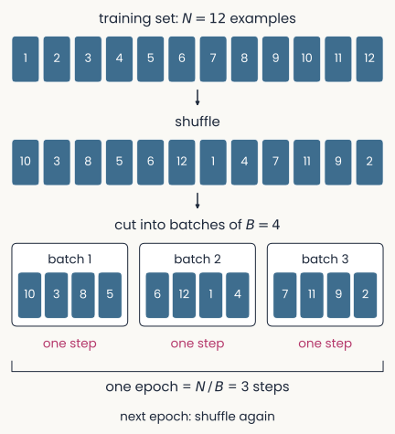
Twelve numbered training examples in order, then the same twelve shuffled, then cut into three batches of four; each batch is one step, and the three steps make one epoch; the next epoch shuffles again
Open full-size figure
Slide 37
Shrink the step: learning-rate schedules
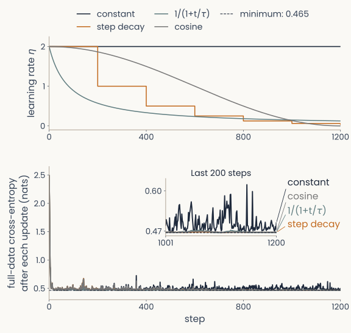
Two stacked panels. Top: the learning rate against step for four schedules: constant, step decay that halves it at fixed intervals, 1 over 1 plus t over tau, and cosine decay. Bottom: the training loss for each; the shrinking schedules settle lower and more smoothly than the constant one
Open full-size figure
- Noisy minibatch gradients: a constant step keeps bouncing; too large overshoots, too small crawls
- A schedule lowers during training: large steps early, small late. Top: step sizes; bottom: losses (dashed: the lowest possible)
- Step decay halves at fixed intervals (every 200 steps here). Cosine lowers it smoothly to near 0. shrinks it a little at every step ; sets how soon the shrinking starts
- In the last-200-steps inset, the shrinking schedules fluctuate less
Slide 38
Adam: the most popular optimizer
θ: all weights and biases · operations are per weight · Adam's first-step correction omitted
- Momentum (): a running average of recent gradients. The noisy parts of successive minibatch gradients cancel; a consistent direction adds up
- A step size for each weight (): each weight's step is divided by the typical size of its own gradient. Weights with small gradients still move, and large gradients are scaled down
- and set how much of each running average is kept at every step. The defaults, and , work on most problems. , a tiny number, prevents division by zero
- Usually fewer steps to a low loss than plain gradient descent, but it still needs a learning rate
Slide 39
The learning rate, measured
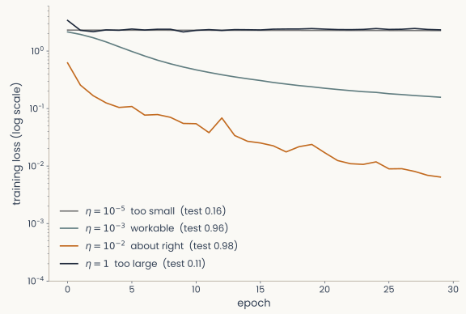
Training loss on a log scale against epoch for four learning rates. At 10 to the minus 5 the loss stays flat near 2.3 (test accuracy 0.16); at 10 to the minus 3 it falls steadily to about 0.16 (test 0.96); at 10 to the minus 2 it falls fastest, below 0.01 (test 0.98); at 1 it stays flat near 2.3 (test 0.11)
Open full-size figure
- Four runs of one network (64 ReLU hidden units) on handwritten digits, differing only in ; "test" = accuracy on held-out images
- Too large a step can switch a ReLU unit off on every input: a dead unit
- Too small: the loss barely moves. Too large: it sticks at chance (−log 1/10 ≈ 2.3); the units died
- The range that works spans orders of magnitude, so sweep on a log scale, and sweep it first
Slide 40
Recap
- Hidden layers: one neuron draws one line. Two ReLU hidden units re-represent the XOR inputs so that one line separates the classes
- Backpropagation: forward pass, error at the output (), error sent backward through the weights, and every gradient is error × activity. Autograd runs these steps for you
- The training loop: a softmax readout for many classes, then forward, loss,
backward(),step(), repeated over epochs. Freezing a trained layer trains only the readout - Step sizes: minibatches, a learning rate that shrinks, and Adam. Sweep on a log scale first
Slide 41
Going further
Optional slides, beyond the core of the lecture
Slide 42
Weight transport: must feedback copy the weights?
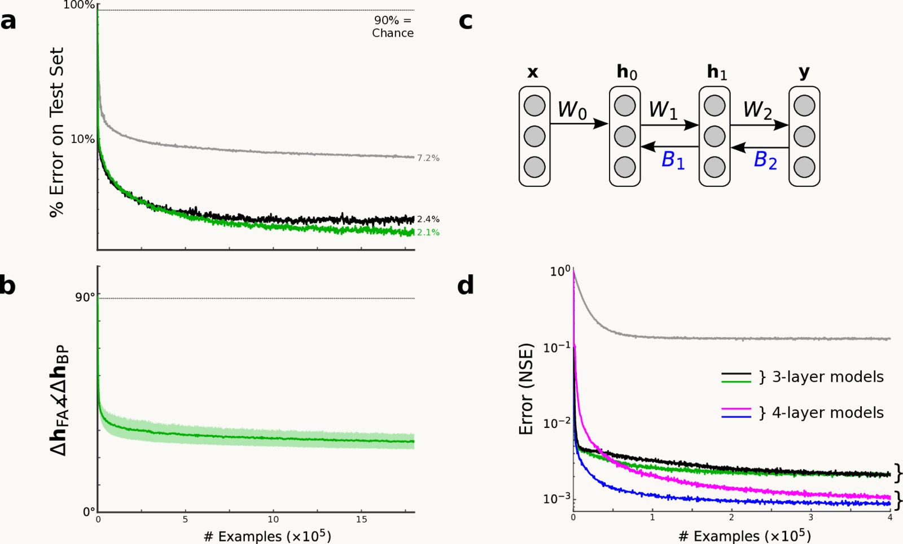
Feedback alignment, from Lillicrap et al. 2016, Fig. 2: with fixed random feedback weights the hidden-unit updates come within 90 degrees of backprop's, and the MNIST test error of feedback alignment nearly matches backprop's
Open full-size figure
- Backprop sends the error back through the forward weights , so feedback synapses would have to copy them (weight transport)
- With fixed random feedback weights instead, the forward weights adapt until the hidden units' updates point within of backprop's (panel b)
- On MNIST (handwritten digits), 2.1% test error vs 2.4% for backprop
Slide 43
Error signals in dendrites, one per neuron
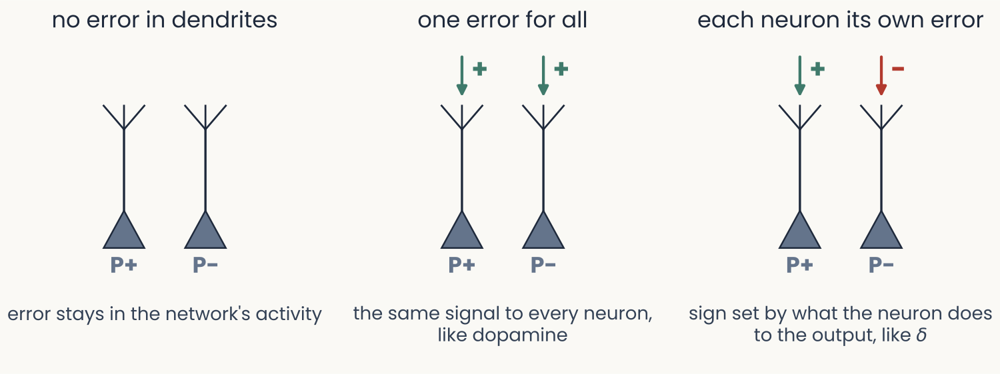
Three panels, each with two pyramidal neurons labelled P+ and P minus, with an apical dendrite rising to a tuft. No error in dendrites: no arrows. One error for all: the same green plus arrow onto both tufts, the same signal to every neuron, like dopamine. Each neuron its own error: a green plus arrow onto P+ and a red minus arrow onto P minus, sign set by what the neuron does to the output, like delta
Open full-size figure
- Mice turned a grating with a brain–computer interface (BCI): a few layer-5 neurons (P+) rotated it toward the target, others (P−) away
- Their apical dendrites carried error-related signals of opposite sign, matching each group's effect: each neuron its own error. Silencing them disrupted learning (caveat: a BCI task)
Slide 44
Why do codes drift? Noisy steps never stop
![Two stacked panels sharing a horizontal axis, epochs after the loss settled, 0 to 200, for the digit network kept learning from the same converged weights under three conditions. Top: drift of the hidden units' tuning, 1 minus the mean cosine similarity of each unit's responses to the 450 test digits with its responses at the start. With minibatches of 8 and a constant learning rate (dark line) drift climbs steadily, to 0.064 at epoch 50, 0.094 at epoch 100 and 0.123 at epoch 200. With a shrinking learning rate (green) it stays below 0.001 (0.0004 at epoch 200), and with full-batch steps (orange) it stays at 0. Bottom: test accuracy in percent, axis 90 to 100. All three stay near the starting 98.2 percent; the constant-rate line wobbles between 92 and 98.9 percent, and its mean over the last 20 epochs is 97.9 percent](../images/L09/drift_minibatch_noise.svg)
Two stacked panels sharing a horizontal axis, epochs after the loss settled, 0 to 200, for the digit network kept learning from the same converged weights under three conditions. Top: drift of the hidden units' tuning, 1 minus the mean cosine similarity of each unit's responses to the 450 test digits with its responses at the start. With minibatches of 8 and a constant learning rate (dark line) drift climbs steadily, to 0.064 at epoch 50, 0.094 at epoch 100 and 0.123 at epoch 200. With a shrinking learning rate (green) it stays below 0.001 (0.0004 at epoch 200), and with full-batch steps (orange) it stays at 0. Bottom: test accuracy in percent, axis 90 to 100. All three stay near the starting 98.2 percent; the constant-rate line wobbles between 92 and 98.9 percent, and its mean over the last 20 epochs is 97.9 percent
Open full-size figure- Drift: a neuron's tuning changes while behavior holds. In mouse visual cortex it speeds up for the images being shown
- Our digit network, loss settled, learning on from noisy feedback: small batches at a constant keep moving its tuning
- A shrinking or full-batch steps: tuning settles. Accuracy stays near 98% in all three
- Noisy steps that never shrink move the code, not the performance
Slide 45
Do backprop's gradients follow the brain's hierarchy?
![Two scatter plots, one point per brain region, horizontal axis distance from V1 in millimetres (0 to about 110), vertical axis the network layer that best predicts the region, as a fraction of network depth. Left, panel C, forward activations: V1, V2, V3 and V4 sit low near 0.7 to 0.77, regions farther from V1 are best predicted by deeper layers, and the fitted line rises (r = 0.35, p = 5e-03). Right, panel D, backpropagated gradients: V1 and V2 sit near 0.90 to 0.91, V4 near 0.95, and the fitted line falls with distance (r = -0.27, p = 4e-02)](../images/L09/pub_raugel2026_fig2cd.png)
Two scatter plots, one point per brain region, horizontal axis distance from V1 in millimetres (0 to about 110), vertical axis the network layer that best predicts the region, as a fraction of network depth. Left, panel C, forward activations: V1, V2, V3 and V4 sit low near 0.7 to 0.77, regions farther from V1 are best predicted by deeper layers, and the fitted line rises (r = 0.35, p = 5e-03). Right, panel D, backpropagated gradients: V1 and V2 sit near 0.90 to 0.91, V4 near 0.95, and the fitted line falls with distance (r = -0.27, p = 4e-02)
Open full-size figure- Encoding models predicted fMRI from a network's activations and, separately, from its backpropagated gradients
- Left, activations: regions farther from V1 match deeper layers. Right, gradients: the trend reverses
- Shared representations, different ways of learning them?
Slide 46
A weight update that keeps synapses brain-like
![Two panels from a recurrent network trained on many cognitive tasks; blue is gradient descent, red is exponentiated gradient. Left, panel E: histograms of the logarithm of the size of the recurrent weights, from about minus 10 to 2, each with a dashed bell curve fitted to it. The blue histogram is lopsided, with a long tail to the left, and misses its bell curve; the red histogram follows its bell curve closely. Right, panel G: the number of weights that change sign at each update, in thousands, over 6,000 updates. Blue rises to about 1,500 to 2,000 early, with spikes up to about 3,500, and falls to 0 at the end; red stays flat at 0](../images/L09/pub_cornford2026_fig1eg.png)
Two panels from a recurrent network trained on many cognitive tasks; blue is gradient descent, red is exponentiated gradient. Left, panel E: histograms of the logarithm of the size of the recurrent weights, from about minus 10 to 2, each with a dashed bell curve fitted to it. The blue histogram is lopsided, with a long tail to the left, and misses its bell curve; the red histogram follows its bell curve closely. Right, panel G: the number of weights that change sign at each update, in thousands, over 6,000 updates. Blue rises to about 1,500 to 2,000 early, with spikes up to about 3,500, and falls to 0 at the end; red stays flat at 0
Open full-size figure- Exponentiated gradient (EG): multiply instead of subtract, . A weight never changes sign
- Left: EG's weights are log-normal, as in cortex: their logs follow a bell curve
- Right: gradient descent (blue) flips thousands of signs per update; EG (red) none, keeping Dale's law (each neuron all excitatory or all inhibitory)
- Same accuracy: the update rule is a modelling choice
Slide 47
Further reading for the research trail
Optional: a few research-trail entries over the semester. Any paper mentioned in any lecture qualifies, but papers from this block are preferred.
- Crick Nature 1989: why backprop, as written, is unlikely to be how the brain learns
- Lillicrap et al. Nat Rev Neurosci 2020: how a brain could approximate the error signal of step 3 without copying the weights backward
- Kingma & Ba ICLR 2015: two running averages per weight give a step size that needs little tuning
- Cornford et al. Neuron 2026: multiplying weights instead of subtracting keeps their signs and gives brain-like weight distributions
Slide 48
Minute paper
Submit on Canvas → Minute papers → Minute Paper 10 (access code read out in class).
Write three brief points in your own words:
- In plain words, no equations: why can a multilayer perceptron solve XOR when a single neuron cannot?
- Something you do not yet understand, or a question still open
- Another idea you found interesting, and why it matters for brains, behavior or AI
Credit for a thoughtful attempt, not for being correct.